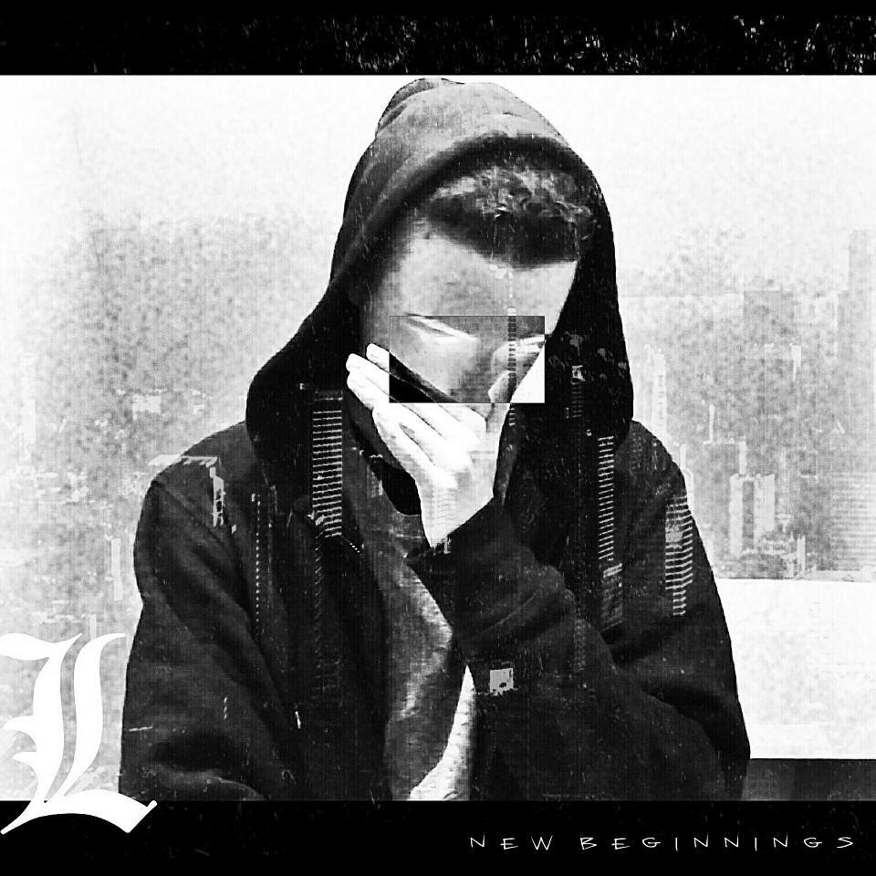

January 29th
After 16 months we're finally at the finish line. This album is about the traumatic experiences I faced leaving music and returning. It is a concept album and very focused on lyricism, moods and darkness. Big shout-out to the features and engineers for the album.
Features: GrewSum, Dubbs, C. Ray, Masetti, Danny Thomas, Sleep Lyrical

Born in Tennessee in 1991, Nate acquired the South’s great passion for music at a young age. This passion followed him to Twin Cities, Minnesota where he moved at the age of six. Being constantly surrounded by dedicated musicians during his upbringing taught Nate how his passion for music could be harnessed to express his own experiences and emotions.
Millyunz’s first forays into music were directly inspired by great American rock bands like Kansas and the Eagles (the first song Nate ever learned to perform being “Carry on My Wayward Son” by the former). However, Millyunz soon branched out and during the late 90’s began his punk inspired skating days. His love for bands like Blink 182, saw that his first days on stage were spent singing for several different punk, hard-core and metal bands. It wasn’t until his junior high school year that Nate began experimenting with Hip-Hop. By the time senior year rolled around Nate’s skills were developed enough that, at the urging of his very impressed friends and peers, he bought some recording equipment and got to work writing and recording.

17 year old rap artist from Vancouver, BC, Canada
Nathaniel Czajkowski (aka Nate Winters), 16, is a hip-hop artist from Portsmouth, New Hampshire. Unfortunatly, Nate was shot and killed outside of Albertaco's Mexican restaurant on Sunday, October 29, 2017.

15 Year-Old Producer & Rapper from Saskatoon, SK, Canada
Justin Ritter (born September 28, 1987), better known by his stage name SwizZz, is an American rapper. He is best known for significantly collaborating with childhood friend Hopsin, and being signed to their record label Funk Volume, which was co-founded by Hopsin, himself, and his older brother Damien "Dame" Ritter. He has released various mixtapes including Haywire with Hopsin, and Good Morning SwizZzle. He is currently working on his untitled debut studio album.
Dilz is a 21 year old Hip Hop artist from New Zealand with a fresh voice and creative lyrics.
Working endlessly on collaborations and mixtapes from the start of his career as an amateur rapper, Dilz has grown into a professional ready to break his way into the forefront of New Zealand Hip Hop with his debut album "Metamorphosis".